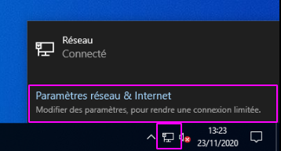
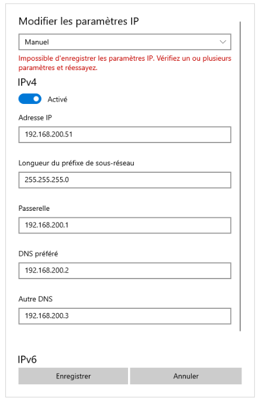
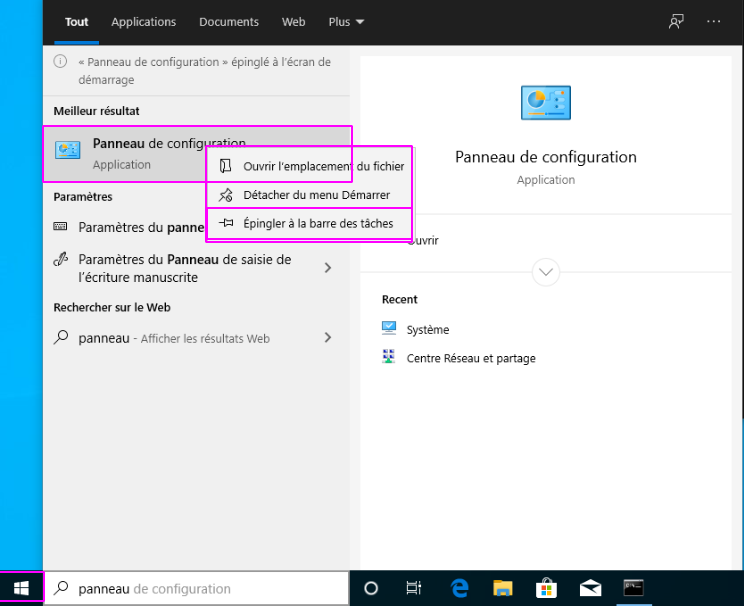
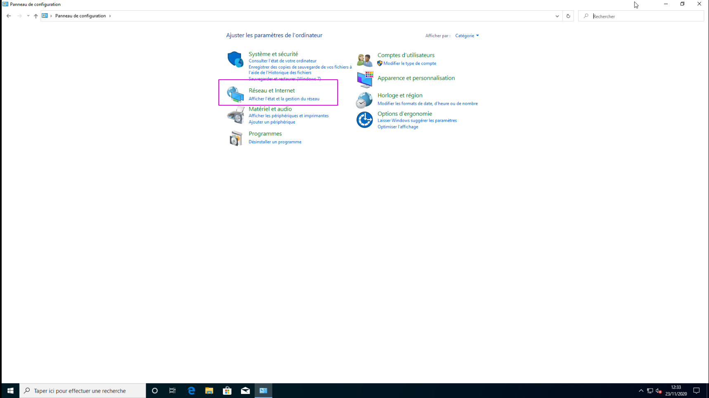

Fixer son IP avec windows 10
Contexte
Dans le cadre d’une maquette de service SambaAD , j’avais besoin de fixer l’IP d’une machine windows 10.
Alors oui, je trouve que cette mouture est plutot joli … mais ça n’en fait pas un bon système pour autant.
Le nouveau menu de configuration
Avec l’arrivée de Win10 , nous avons eu le droit à un nouveau panneau de configuration certe très joli , mais malheureusement encore une fois il y a des bugs.
Notamment pour la parti configuration réseau.
En utilisant l’icone en bas à droite.

Pourtant la configuration est bonne.

Fixer son IP
Nous allons donc passer par l’ancien Panneau de configuration .
L’épingler dans la barre de tâches en faisant un clic droit dessus, puis sélectionner: épingler à la barre de tâches 
Nous voici dans le Panneau de configuration, sélectionner alors : réseau et internet

Ce travail est sous licence Attribution-NonCommercial 4.0
International.